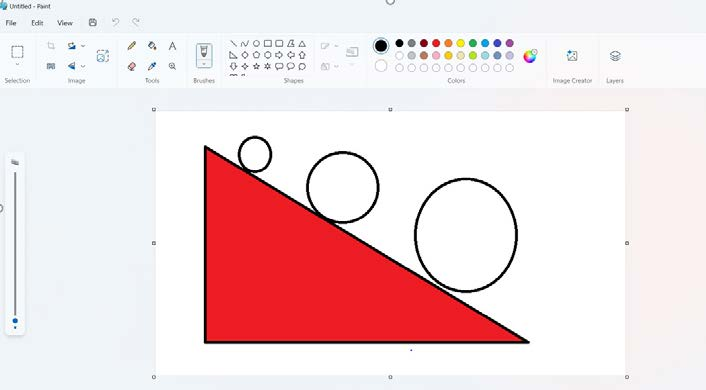
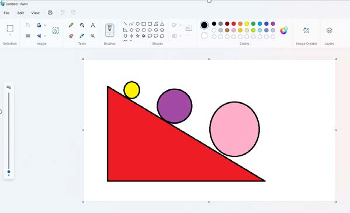

Maelezo ya programu fikivu ya Quorum: Pembetatu mraba nyekundu yenye maduara matatu ya ukubwa tofauti kwenye upande wa mteremko.Kielelezo namba 11: pembetatu mraba iliyopakwa rangi nyekundu.
4.
Bofya au tumia mishale kwenye rangi ya njano ‘Yellow’, kisha bofya au tumia mishale ndani ya eneo la duara dogo zaidi la kwanza.
5.
Bofya au tumia mishale kwenye rangi ya zambarau ‘Purple’, kisha bofya au tumia mishale ndani ya duara la pili.
6.
Bofya au tumia mishale kwenye rangi ya pinki ‘Rose’, kisha bofya au tumia mishale ndani ya duara la tatu.
Utapata maumbo yenye rangi kama inavyooneshwa katika Kielelezo namba 12.

Maelezo ya programu fikivu ya Quorum: Pembetatu mraba nyekundu yenye duara dogo la njano, duara la kati la zambarau, na duara kubwa la pinki kwenye upande wa mteremko.Kielelezo namba 12: pembetatu mraba na maduara yaliyopakwa rangi.